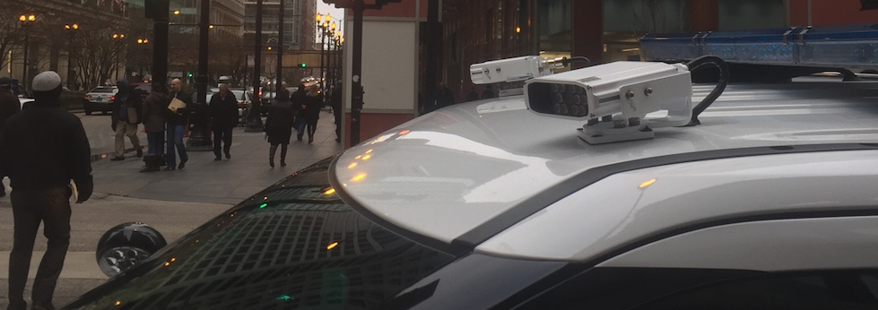

Automatic License Plate Recognition, or ALPR, take images of vehicles in public spaces, analyze the text on their license plates, and record the timestamp and position of the car (based on GPS coordinates).
Unknown since many ALPRs are mobile. However, LPL is currently suing for the locations of stationary ALPRs. In 2019 the Chicago Police Department purchased an additional 200 ALPRs, bringing the total to over 240. Each of Chicago's 25 districts has at least six ALPR-equipped police vehicles. Chicago can also use their video surveillance network to scan license plates.
CPD has spent more than $500,000 for software to manage and analyze data from ALPRs. In addition, each device costs $25,000, which could bring the total expenditure to over $1.1 million.
Chicago Police Department purchases Motorola / PAGIS automated license plate readers. These devices track the GPS location a license plate was seen and the timestamp. The scanned plates are then checked against a Hot List that consist of plates of interest. According to FOIA documents acquired by the author, there might be as many as 300,000 license plates stored in the Hot List at any one time in Chicago - meaning that approximately 1 in 10 Chicagoans has their vehicle on the Hot List. Each plate's information is stored for 365 days unless it is deemed 'pertinent to criminal or civil matters,' in which case it is retained until a court orders it to be removed.
According to the Chicago Police Department, a vehicle mounted ALPR can capture 3,200 images of license plates in one shift. Documents from the CPD acquired by LPL show that over a two year period, ALPRs recorded over 200 million hits. CPD claims that "The recovery of stolen vehicles has increased significantly." From 2016 to 2020, carjackings have decreased by 20%, although it is unclear to what extent this can be attributed to ALPR.
Even an incomplete record of where an individual's car has been provides detailed information about the activities of that person. In Oakland, over 4.6 million license plate scans from ALPR systems were released in a FOIA request, providing detailed information about Oakland residents' activities - including activities protected by the First Amendment.
Concerns over data retention policies and data sharing also should be addressed and publicly disclosed. The criteria that lands a given plate on the Hot List should be publicly disclosed. Check out the EFF's excellent FAQ on ALPR technology for more information.
In 2017, Immigration and Customs Enforcement (ICE) signed a contract with Thomson Reuters which gave them access to a database with billions of nationwide license plate records gleaned from ALPRs, which they can use to track and target immigrants. In addition, ICE has signed contracts with over 80 local law enforcement agencies for their data, including four in the Chicago area.
At the state level in Illinois, there are currently several bills that have been introduced (but not yet passed) in recent years to regulate ALPR use. A couple of these bills have been shot down, and one has been sitting in the Senate for over a year.
In 2018 the CPD issued a directive that sets procedural standards for ALPR use, yet which does not clarify what purposes ALPRs can or cannot be used for.
From documents acquired by Jennifer Helsby
Automatic License Plate Reader on Chicago Police Vehicle
Image courtesy Freddy Martinez
From documents acquired by Jennifer Helsby
{kind=link}